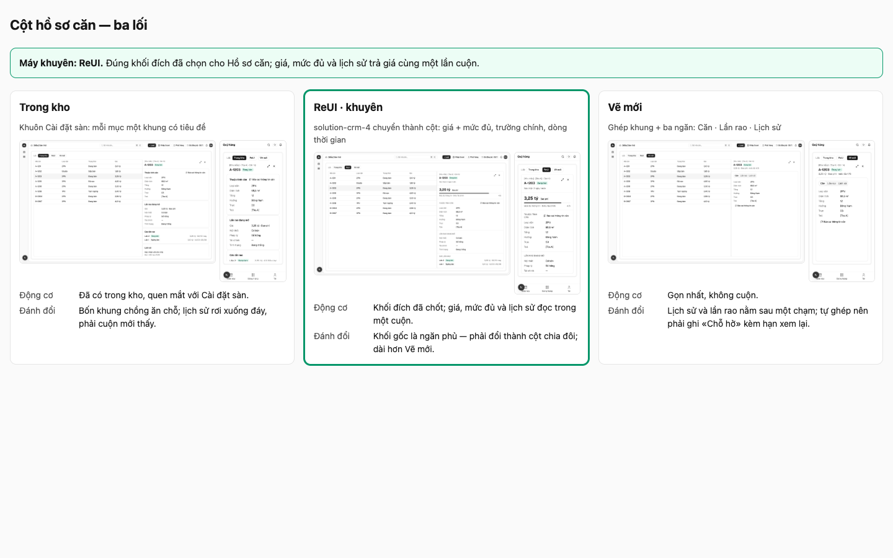
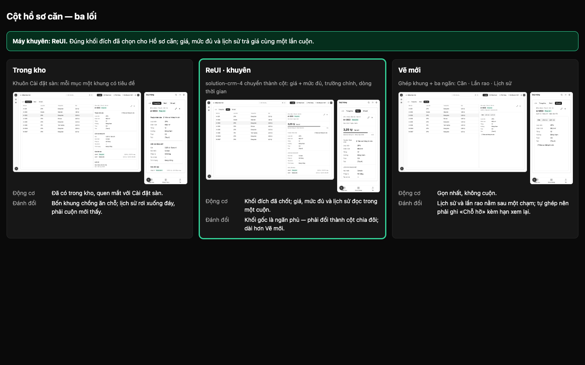
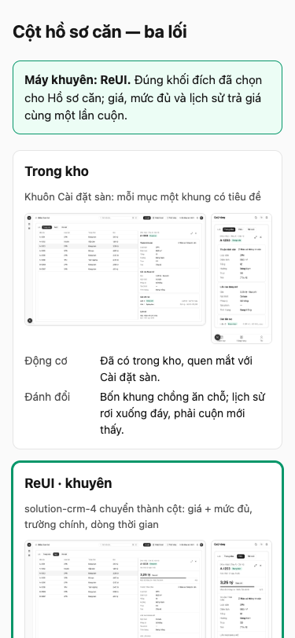
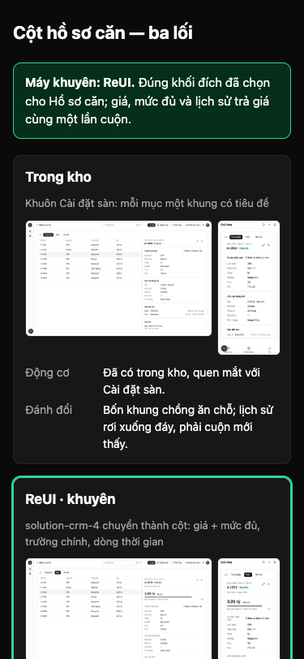

Chủ sản phẩm duyệt Cổng Phạm vi của một vòng chạm ô chưa có khuôn trên trang so ba lối — Trong kho, ReUI, Vẽ mới — dựng bằng lệnh, cùng khổ 1440 và 375, mỗi lối một câu đánh đổi, lời khuyên ghim trên trang; vòng có ô chưa có khuôn mà bỏ bước phân kỳ thì bài chấm đỏ, vòng chỉ đi khuôn sẵn thì không cần trang
Vì sao làm
Chủ sản phẩm duyệt Cổng Phạm vi của một vòng chạm ô chưa có khuôn và thấy trang so ba lối — Trong kho, ReUI, Vẽ mới — cùng khổ 1440 và 375, mỗi lối một câu đánh đổi, lời khuyên của máy ghim trên trang; vòng chỉ đi khuôn sẵn thì không có trang ấy
Đã hứa
- AC-1 — — Kế hoạch ba lối.**
- AC-2 — — Dựng trang đủ ba cột.**
- AC-3 — — Lối không có ứng viên vẫn giữ cột.**
- AC-4 — — Trang sai thì đỏ, không ghi trang.**
- AC-5 — — Nhận ô chưa có khuôn.**
- AC-6 — — Ô chưa có khuôn mà bỏ bước phân kỳ thì đỏ.**
- AC-7 — — Vòng chỉ đi khuôn sẵn thì không cần trang.**
- AC-8 — — Vật thử thật của 17 và 27.**
- AC-9 — — Răng trên cây.**
- AC-10 — — Luật ghi cho người và tác tử. **
Thiết kế
docs/superpowers/specs/2026-11-01-the-ba-loi-design.md
Quyết định
- 2026-11-01 · Máy · approach · S1 — Đã tra tri thức: Chủ sản phẩm duyệt Cổng Phạm vi của một vòng chạm ô chưa có khuôn và thấy trang so ba lối — Trong kho, ReUI, Vẽ mới — cùng khổ 1440 và 375, mỗi lối một câu đánh đổi, lời khuyên của máy ghim trên trang; vòng chỉ đi khuôn sẵn thì không có trang ấyKho đã khai tri_thuc — bước thiết kế tra trang trước khi chọn.
- 2026-11-01 · Máy · approach · S1 — Chế độ ba lối nằm trong bộ đối chiếu doi-chieu.mjs (ba lệnh --ba-loi, --dung-ba-loi, --kiem-ba-loi) với lõi chung ở packages/ui-lint/lib/ba-loi.mjs; bài «ô chưa có khuôn» chạy ở bước chấm của vòng, không thêm bước CI.ADR-0019 «Hệ quả» đặt chế độ ba lối vào bộ đối chiếu, mà bộ đối chiếu là lệnh của vòng (skill quy-hang-ui bước 3–4), không phải bước CI.
- 2026-11-01 · Máy · approach · S1 — «Ô chưa có khuôn» nhận bằng ba điều so nhánh gốc: tệp nhóm mới ở design/patterns, ô «Khối đích» của một màn ở vo-va-ia §2 đổi, dòng «Chỗ hở» mới ở §3.ADR-0019 quyết định 2 định nghĩa đúng ba trường hợp ấy; mỗi trường hợp để vết ở một tệp máy đọc được.
- 2026-11-01 · Máy · approach · S1 — Tên ảnh theo nếp hai trang tay: <lối>-<khổ>.png trong _acceptance/<slug>/ba-loi/, lối trong-kho · reui · ve-moi; trang nhúng ảnh base64 để gửi một tệp.Hai trang ba lối đã có dùng đúng tên ấy; trang đi kèm thẻ bằng công cụ gửi tệp nên ảnh tách rời sẽ gãy.
- 2026-11-01 · Máy · descope · S1 — KHÔNG dựng lại hai trang tay của hàng 17 và 27 bằng lệnh; răng trên cây chỉ đòi trang có mặt khi hồ sơ không có ba-loi.json.Hai hồ sơ đã ký; sửa vật trong hồ sơ đã ký làm làn ghim lại dừng (kit chặn chạm cây _acceptance của hồ sơ signed-off).
- 2026-11-01 · Máy · descope · S1 — bỏ design-pass — hàng không chạm màn của apps/web; trang ba lối là tệp tài liệu gửi kèm thẻ, chấm bằng test trên trang dựng từ vật thử.Bề mặt của hàng là lint và docs; không có route nào để dựng bản bấm được.
- 2026-11-01 · Máy · descope · S1 — bỏ đặc-tả-UX — hàng không chạm màn người dùng sản phẩm; trang ba lối có cấu trúc khai ở design doc §2.1.Đặc tả UX là cho màn của apps/web; trang ba lối là tài liệu duyệt nội bộ.
- 2026-11-01 · Máy · descope · S1 — KHÔNG đưa ảnh trạng thái thêm (trống, đang tải, lỗi) và nhu cầu, thước chung (CK5) vào trang ba lối của lệnh.CK5 là mục chờ H17 chủ kho giữ lại tới khi vài vòng đầu cho thấy thiếu (docs/plan/pham-vi-cong-chon-khoi.md).
- 2026-11-01 · Người · seal · gate1 —
- 2026-11-01 · Máy · approach · S1 — Hỏi-1: bài «ô chưa có khuôn bỏ bước phân kỳ thì đỏ» chạy ở bước chấm của vòng giao diện (lệnh --kiem-ba-loi, như bộ đối chiếu), cộng răng lint cho trang đã mở — chưa đưa vào CI mỗi PR.Gap-probe P0: câu ADR-0019 chỉ đặt chế độ ba lối vào bộ đối chiếu, không quyết độ cứng của rào; đưa vào CI cần job check lấy đủ lịch sử để so nhánh gốc.
- 2026-11-01 · Máy · revisit · gate2 — Ngoài-1: ghi Known limitsmáy tự định tuyến theo đề xuất S4 «known-limits» — kho bật feature_loop.ngoai_n_tu_dinh_tuyen
- 2026-11-01 · Máy · revisit · gate2 — Ngoài-2: chấp nhận, không sửamáy tự định tuyến theo đề xuất S4 «wont-fix» — kho bật feature_loop.ngoai_n_tu_dinh_tuyen
- 2026-11-01 · Máy · revisit · gate2 — Ngoài-3: ghi Known limitsmáy tự định tuyến theo đề xuất S4 «known-limits» — kho bật feature_loop.ngoai_n_tu_dinh_tuyen
- 2026-11-01 · Máy · revisit · gate2 — Ngoài-4: ghi Known limitsmáy tự định tuyến theo đề xuất S4 «known-limits» — kho bật feature_loop.ngoai_n_tu_dinh_tuyen
- 2026-11-01 · Máy · revisit · gate2 — Ngoài-5: ghi Known limitsmáy tự định tuyến theo đề xuất S4 «known-limits» — kho bật feature_loop.ngoai_n_tu_dinh_tuyen
- 2026-11-01 · Người (Manh Phan) · approach · gate1 — Chủ kho duyệt Cổng Phạm vi, nhận Hỏi-1 theo khuyến nghị: bài «bỏ bước phân kỳ thì đỏ» chạy ở bước chấm của vòng cộng răng lint, chưa vào CI.Câu gộp «duyệt» trên thẻ có Hỏi-1 điền sẵn lời khuyên.
- 2026-11-01 · Máy · fix · S3 — E11 thêm khoá steps (bốn bước mở trang mẫu ở 1440/375, sáng/tối) — chỉ cách làm của ô ui-check, không đổi điều đạt.s4-args từ chối sinh args khi ô ui-check thiếu steps; expected của E11 giữ nguyên chữ đã duyệt.
Bằng chứng
Các eval
| Eval | Tiêu chí | Loại | Verdict | run_id | verified_at |
|---|---|---|---|---|---|
| E1 | AC-1 | test | PASS | minted-the-ba-loi-E1-r1 | 2026-11-01T08:24:49Z |
| E2 | AC-2 | test | PASS | minted-the-ba-loi-E2-r1 | 2026-11-01T08:24:49Z |
| E3 | AC-3 | test | PASS | minted-the-ba-loi-E3-r1 | 2026-11-01T08:24:49Z |
| E4 | AC-4 | test | PASS | minted-the-ba-loi-E4-r1 | 2026-11-01T08:24:49Z |
| E5 | AC-5 | test | PASS | minted-the-ba-loi-E5-r1 | 2026-11-01T08:24:49Z |
| E6 | AC-6 | test | PASS | minted-the-ba-loi-E6-r1 | 2026-11-01T08:24:49Z |
| E7 | AC-7 | test | PASS | minted-the-ba-loi-E7-r1 | 2026-11-01T08:24:49Z |
| E8 | AC-8 | test | PASS | minted-the-ba-loi-E8-r1 | 2026-11-01T08:24:49Z |
| E9 | AC-9 | script | PASS | minted-the-ba-loi-E9-r1 | 2026-11-01T08:24:49Z |
| E10 | AC-10 | judgment | PASS | — | — |
| E11 | AC-2 | ui-check | PASS | minted-the-ba-loi-E11-r1 | 2026-11-01T08:24:49Z |
Chi tiết từng eval
PASS E1 · test
AC-1: — Kế hoạch ba lối.**
npm test -w @quy-hang/ui-lint ca «ba lối: kế hoạch sáu ảnh và khung» và «ba lối: khung đi trọn tới trang» ok duration_ms 11594.674375
PASS E2 · test
AC-2: — Dựng trang đủ ba cột.**
npm test -w @quy-hang/ui-lint ca «ba lối: dựng trang đủ ba cột» ok duration_ms 11594.674375
PASS E3 · test
AC-3: — Lối không có ứng viên vẫn giữ cột.**
npm test -w @quy-hang/ui-lint ca «ba lối: lối không có vẫn giữ cột» ok duration_ms 11594.674375
PASS E4 · test
AC-4: — Trang sai thì đỏ, không ghi trang.**
npm test -w @quy-hang/ui-lint ca «ba lối: trang sai thì đỏ gọi tên» ok duration_ms 11594.674375
PASS E5 · test
AC-5: — Nhận ô chưa có khuôn.**
npm test -w @quy-hang/ui-lint ca «ô chưa có khuôn: nhận ba loại» ok duration_ms 11594.674375
PASS E6 · test
AC-6: — Ô chưa có khuôn mà bỏ bước phân kỳ thì đỏ.**
npm test -w @quy-hang/ui-lint ca «ô chưa có khuôn: bỏ bước phân kỳ thì đỏ» ok duration_ms 11594.674375
PASS E7 · test
AC-7: — Vòng chỉ đi khuôn sẵn thì không cần trang.**
npm test -w @quy-hang/ui-lint ca «ô chưa có khuôn: đi khuôn sẵn thì không cần trang» ok duration_ms 11594.674375
PASS E8 · test
AC-8: — Vật thử thật của 17 và 27.**
npm test -w @quy-hang/ui-lint ca «vật thử: trang 17 và 27 dựng bằng lệnh» và «vật thử: lịch sử bảng thật» ok duration_ms 11594.674375
PASS E9 · script
AC-9: — Răng trên cây.**
node packages/ui-lint/kiem-chuan.mjs chuẩn giao diện: đạt
PASS E10 · judgment
AC-10: — Luật ghi cho người và tác tử. **
PASS E11 · ui-check
AC-2: — Dựng trang đủ ba cột.**







PASS 375 sang: scrollWidth 375 <= 375; khuyen top 77 < 812 va nhac ReUI; ba section xep doc top 190.5 (trong-kho) < 587.6 (reui) < 1004.2 (ve-moi), cung left 16; body rgb(23,23,23) != rgb(250,250,250); vien reui xanh khac. PASS 375 toi: scrollWidth 375 <= 375; khuyen top 77; thu tu doc nhu tren; body rgb(250,250,250) != bg rgb(10,10,10); vien reui rgb(52,211,153) khac rgb(38,38,38). Console: chi 1 loi la favicon.ico 404 (tai nguyen tinh, chi note); khong co request app nao khac.
Eval không phân biệt (Analyst)
Vòng verify
- Round 1: mọi eval xanh; verdict PASS.
Tài nguyên
| Khối | Tác tử | Token đầu ra |
|---|---|---|
| S4 round 1 | 19 | 47.133 |
1 lượt chấm · tổng 47.133 token
Giới hạn và ngoài hợp đồng
- Nhu cầu trích từ câu giao, thước chấm chung, dữ liệu ca xấu nhất (CK5) — mục chờ H17.
- Ảnh trạng thái thêm (trống, đang tải, lỗi) trên trang ba lối.
- Chạy bài «ô chưa có khuôn» ở CI mỗi PR — bài chạy ở bước chấm của vòng như bộ đối chiếu.
- Dựng lại hai trang tay của hàng 17 và 27 bằng lệnh (hồ sơ đã ký).
- Đổi khối đích ngoài bảng §2.
Giao
chưa ghi quan sát production
Giá trị
- Câu hỏi phép đo trả lời: [đề xuất] đã đạt «Vòng thử có màn đầu nhóm mới: trang ba lối dựng đủ ba cột cùng khổ, cột không có ứng viên ghi «không có» kèm điều đã tra; design-pass ghi skipped → đỏ; vòng chỉ điền khe nhóm có sẵn → không có trang, không đỏ» chưa? — chưa đo
- Kết quả nào là SỐNG: [đề xuất] Vòng thử có màn đầu nhóm mới: trang ba lối dựng đủ ba cột cùng khổ, cột không có ứng viên ghi «không có» kèm điều đã tra; design-pass ghi skipped → đỏ; vòng chỉ điền khe nhóm có sẵn → không có trang, không đỏ — chưa đo
- Kết quả nào là CHẾT: [đề xuất] chưa đạt «Vòng thử có màn đầu nhóm mới: trang ba lối dựng đủ ba cột cùng khổ, cột không có ứng viên ghi «không có» kèm điều đã tra; design-pass ghi skipped → đỏ; vòng chỉ điền khe nhóm có sẵn → không có trang, không đỏ» khi hết timebox — chưa đo
- Timebox: … — chưa đo